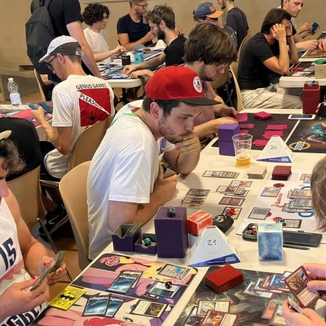

About

Me while being protected by Fangren Marauder
About me:
- Data Scientist (2019 - now)
- Python developer (2018 - now)
- Magic:the Gathering Player (Mirrodin Block - now)
- Pauper Player (Jund Loam pauper deck release - now)
- Aspiring writer (childhood - now)
Purpose of this blog:
My goal is to combine artificial intelligence / machine learning to mining Pauper format and help the community (expecially me) to understand the format better. I’ll also use this place to post about my tournaments (predominantly in paper), decklists or general brainstorming about things I like or things I think are cool to share.